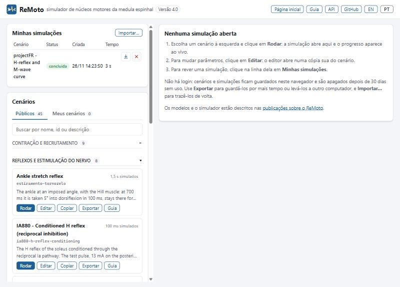
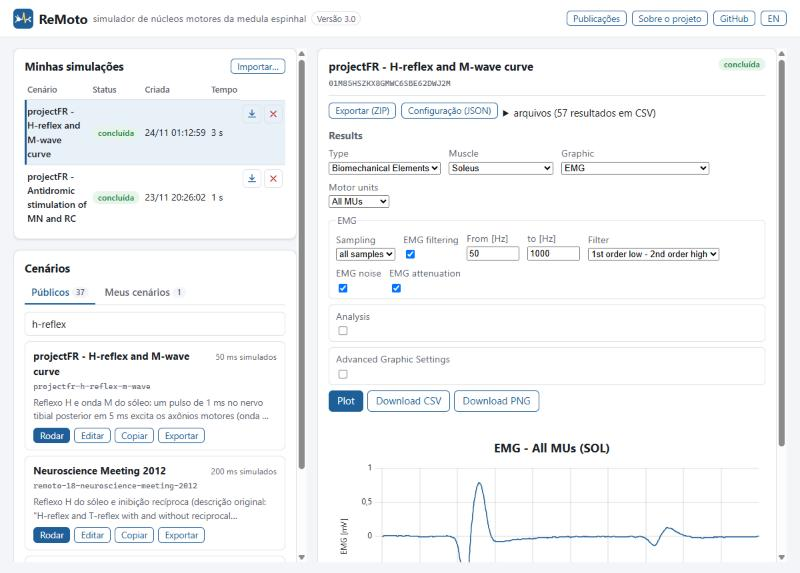
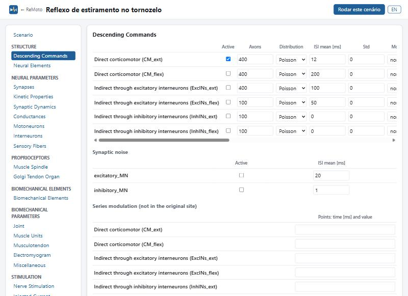

Abra o simulador e escolha um cenário
Não é preciso instalar nada, nem criar conta: o ReMoto roda no navegador. Abra a
demonstração pública ou, na sua máquina,
http://localhost:8080/simulator/ depois de subir o servidor.
A tela tem duas colunas. À esquerda, em cima, Minhas simulações, com o que você já rodou; embaixo, os Cenários, em duas abas: Públicos, os 37 que vêm com o simulador, e Meus cenários, as suas cópias. A busca filtra por nome, id ou descrição. À direita fica a simulação aberta.
Cada cartão de cenário traz o nome, a duração simulada, o id e as primeiras linhas da descrição — um clique mostra o resto, que diz o que aquele cenário simula e de onde ele veio. Os botões são Rodar, Editar, Copiar e Exportar.
Para começar, três boas portas de entrada: Default – Soleus contraction, o cenário padrão do site antigo; projectFR – H-reflex and M-wave curve, que em 50 ms simulados mostra a onda M e o reflexo H; e Modelo completo, com todos os elementos ligados, para passear pela tela de resultados.

Clique em Rodar e acompanhe
O botão Rodar do cartão abre a simulação na coluna da direita e mostra o progresso ao vivo. Ela também aparece em Minhas simulações, com o estado e o tempo de execução.
Os modelos são detalhados e, por isso, lentos: um segundo simulado leva de 17 a 30 segundos numa máquina de quatro núcleos, e os cenários vão de 50 ms a 30 s simulados — a duração aparece no cartão. Na demonstração pública, que é uma máquina pequena dividida por todos, as simulações entram numa fila em rodízio; na sua máquina, não há fila.
O × da linha cancela a simulação em andamento ou apaga a que já terminou. Você pode fechar o navegador: a simulação continua no servidor, e a linha estará lá quando você voltar.
Toda simulação guarda o cenário exato, a semente dos números aleatórios e a versão do motor. Rodar o mesmo cenário com a mesma semente dá os mesmos resultados, bit a bit, com qualquer número de threads.
A tela de resultados, como você a conhece
Terminada a simulação, a coluna da direita vira a tela de resultados do site antigo: os mesmos menus, nomes e eixos. Escolha o que quer ver e clique em Plot.

- Type
- Biomechanical Elements (força, EMG, comprimentos, torque, unidades motoras), Neural Elements (motoneurônios, aferentes, tratos e interneurônios), Properties, Summary e os conjuntos prontos, como Spikes MNs, Forces e General.
- Graphic
- O gráfico em si: 37 biomecânicos (do abalo ao torque na articulação) e 18 por neurônio (raster, frequência instantânea, histograma de intervalos, potenciais do soma e do dendrito, condutâncias, plano de fase). Os menus ao lado escolhem o músculo, o núcleo e o neurônio.
- EMG
- Quando o gráfico é o EMG, aparecem as opções de lá: amostragem, filtro de 1ª/2ª ou 3ª/3ª ordem, cortes, ruído e atenuação. Com as opções padrão, é o EMG que o motor gravou; mudando qualquer uma, ele é refeito a partir do sinal bruto.
- Analysis
- Estatísticas do que está no gráfico (pontos, média, variância, desvio-padrão, CV, mínimo e máximo, com as linhas da média ± DP) e a FFT, com a opção de sinal periódico e a escolha dos eixos.
- Advanced
- Em Advanced Graphic Settings, até oito subgráficos na mesma figura, sobreposição (Hold On), limites dos eixos, título, rótulos, legenda, cor, altura e fonte.
- Baixar
- Download CSV dá os números do gráfico (a opção "file" do site antigo) e Download PNG, a figura. Exportar (ZIP), no alto, leva a simulação inteira: o manifesto com a semente e a versão do motor, a configuração e todos os resultados em CSV. Configuração (JSON) mostra o cenário exato que foi rodado.
Mudar parâmetros: Editar abre uma cópia sua
Os cenários públicos são de todos e só de leitura. O Editar de um deles cria uma cópia em Meus cenários e abre o editor nela; o Copiar só faz a cópia. Nos seus cenários, o Editar abre o editor direto.
O editor é o do site antigo: o mesmo menu à esquerda, as mesmas telas, os mesmos rótulos, unidades e limites. Cada tela se grava sozinha, no botão Salvar; o Rodar este cenário, no alto, volta para a página principal com a simulação já começando.

| Grupo | Telas |
|---|---|
| — | Scenario: nome, descrição e a semente dos números aleatórios |
| Structure | Descending Commands, Neural Elements |
| Neural Parameters | Synapses, Kinetic Properties, Synaptic Dynamics, Conductances, Motoneurons, Interneurons, Sensory Fibers |
| Proprioceptors | Muscle Spindle, Golgi Tendon Organ |
| Biomechanical | Biomechanical Elements (os modelos de articulação e de músculo), Joint, Muscle Units, Musculotendon, Electromyogram, Miscellaneous |
| Stimulation | Nerve Stimulation, Injected Current |
| Simulation | Duration and Time Step: a duração e o passo de integração |
Os rótulos dos campos continuam em inglês nos dois idiomas, como no original, para que o material escrito para ele e os artigos continuem servindo. Os limites também são os de lá: no máximo mil neurônios por tipo em cada núcleo, um intervalo mínimo entre disparos, um passo mínimo e os períodos refratários mínimos.
Montar a sua, a partir de um cenário
O caminho mais curto é copiar o cenário mais próximo do que você quer e mexer nele. A ordem abaixo é a do guia antigo, atualizada para as telas de hoje.
-
Os núcleos e quantos neurônios
Em Structure → Neural Elements, escolha os músculos (SOL, MG, LG e TA) e quantos motoneurônios de cada tipo (S, FR, FF), aferentes e interneurônios entram. O que fica em zero não é criado e não custa tempo.
-
O que move o sistema
Em Descending Commands, ative os tratos e escolha o número de axônios, a distribuição (Poisson, gama ou gaussiana), o intervalo médio e a modulação. Em Stimulation, o pulso no nervo tibial ou fibular, ou a corrente injetada em neurônios escolhidos.
-
A realimentação
Os aferentes só disparam se houver quem os mova: o fuso e o órgão tendinoso de Golgi, em Proprioceptors, com o músculo de Hill e um modelo de articulação que mude o comprimento (Biomechanical Elements e Joint). Com o tornozelo isométrico e o músculo padrão, o fuso não é integrado.
-
As sinapses
Em Neural Parameters, a condutância, o potencial de equilíbrio, o atraso e a conectividade de cada via, a depressão ou facilitação de curto prazo e, se quiser, o peso que cai com a distância entre as células.
-
Duração, passo e semente
Em Simulation → Duration and Time Step, quanto tempo simular e com que passo; em Scenario, a semente. Comece com uma duração curta: o tempo de relógio cresce com ela e com o número de neurônios.
-
Rodar e olhar
Salvar em cada tela que você mudar e Rodar este cenário. Se nada acontecer onde você esperava, confira se o elemento está ativo: quase tudo começa desligado, e os recursos que vieram da versão em Fortran só agem quando o cenário os escolhe.
Sem login: guarde e leve o seu trabalho
Não há conta nem banco de dados. Cada navegador ganha uma área própria, identificada por um cookie de 30 dias: o trabalho sobrevive a fechar o navegador e a reinícios do servidor, e é apagado depois de 30 dias sem uso. Nenhum dado pessoal é guardado.
Para guardá-lo por mais tempo, ou levá-lo a outro computador, use os botões de exportar:
- Um cenário
- Exportar no cartão baixa o cenário em JSON: a configuração inteira, a duração, o passo e a semente, num arquivo de texto que roda também na linha de comando.
- Todos os seus
- Exportar tudo, na aba Meus cenários, dá um .zip com um JSON para cada um; o Importar… ao lado aceita de volta os dois formatos.
- Uma simulação
- Exportar (ZIP) leva o manifesto, a configuração e os resultados em CSV. O Importar… de Minhas simulações traz esse .zip de volta, conferindo o manifesto pelo hash.
Fora do navegador, com o mesmo arquivo
O JSON que você exporta roda sem alteração e sem servidor, e grava cada resultado em CSV. É o caminho para simulações longas, para varreduras de parâmetro e para um cluster.
$ java -jar remoto-cli.jar run meu-cenario.json \ --duration-ms 500 --threads 4 -o resultados/ $ java -jar remoto-cli.jar sweep meu-cenario.json \ --protocol hm --range 5:40:1 -o resultados/curva-hm
A pasta de saída recebe o cenário congelado, o manifesto com a semente e a
versão do motor, e um CSV por resultado. O sweep roda um protocolo em lote — no exemplo,
a curva do reflexo H e da onda M de 5 a 40 mA — e grava uma linha de medidas por simulação. Há ainda
o validate, que confere arquivos de cenário, e o export-legacy, que converte
configurações do banco de dados original.
O que fica de fora deste guia — as instruções de compilação, a API REST, o formato do cenário e a instalação num servidor — está no README e na documentação completa (as duas em inglês). Os modelos estão descritos nas publicações.